Senior IIT 6th Batch
Welcome to the Senior IIT 6th Batch!
We are excited to share our journey and experiences with you.
As seniors, we encourage you to stay curious, collaborate with your peers, and utilize all available resources. Remember to balance your studies with extracurricular activities for a well-rounded experience!
Our Moments
 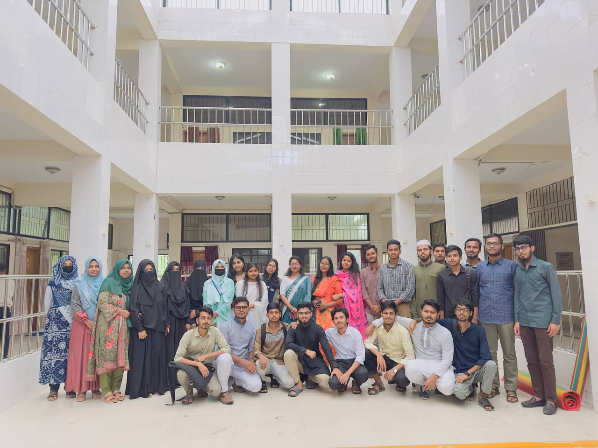
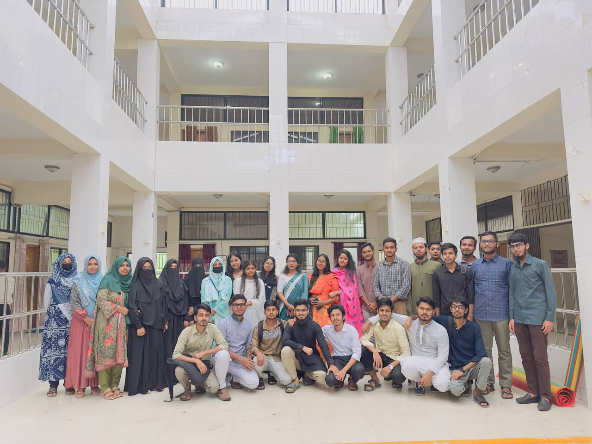
 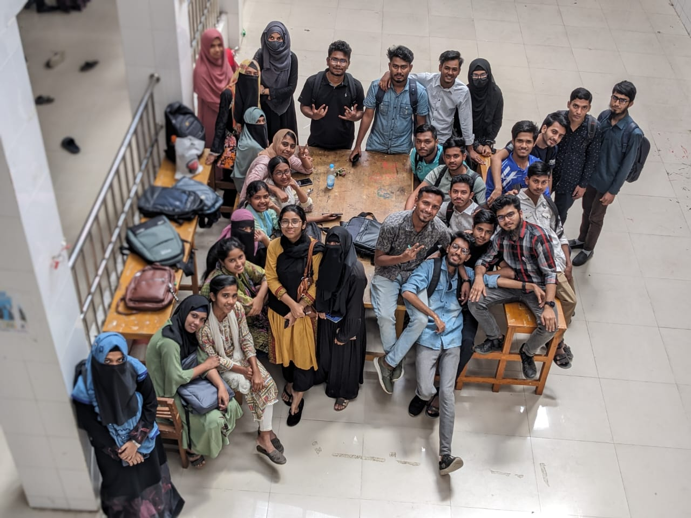
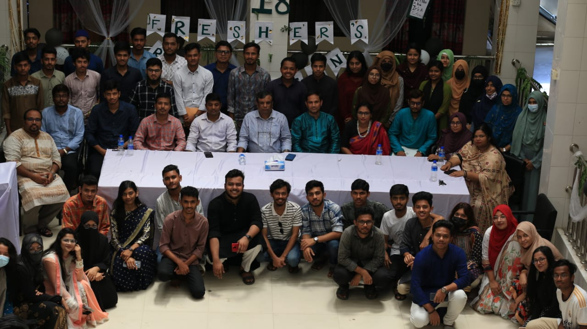
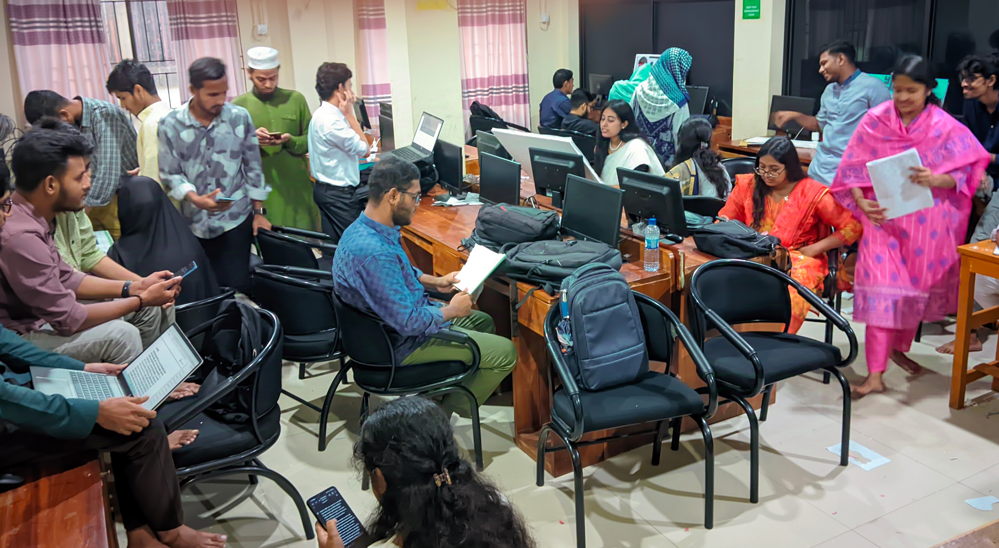
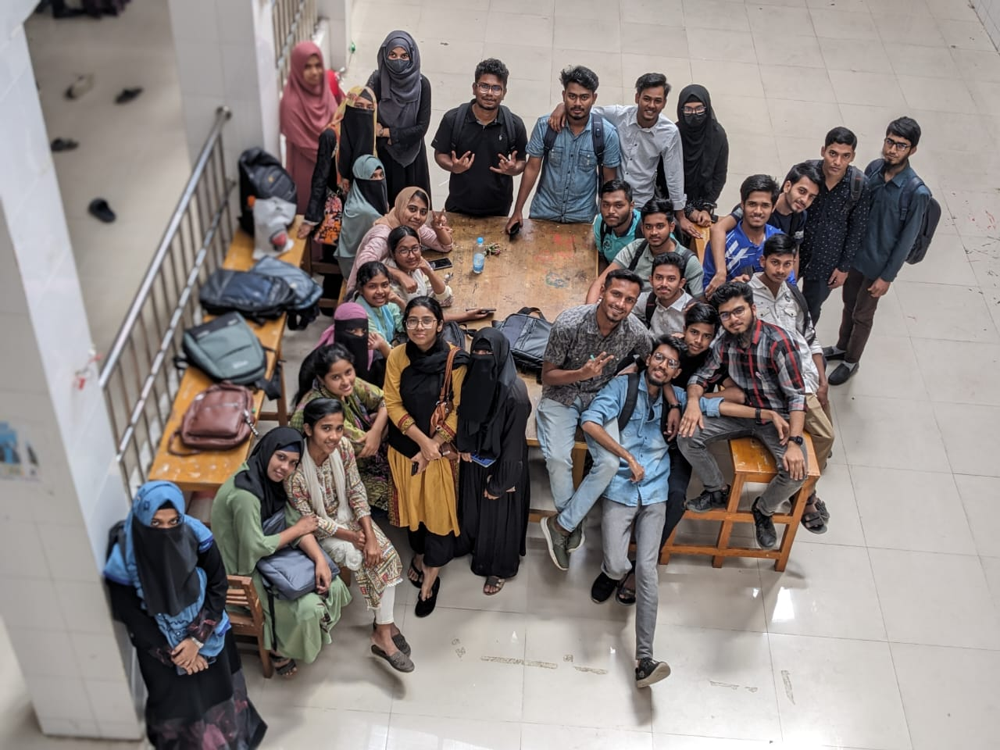
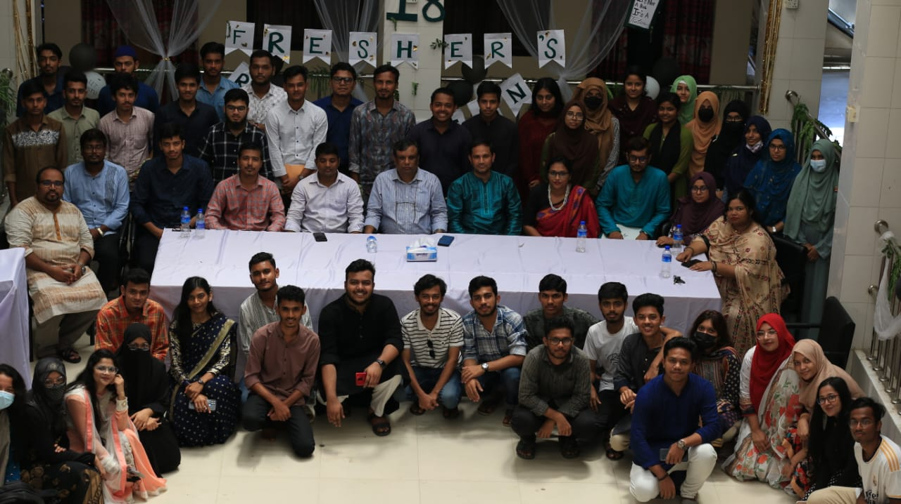
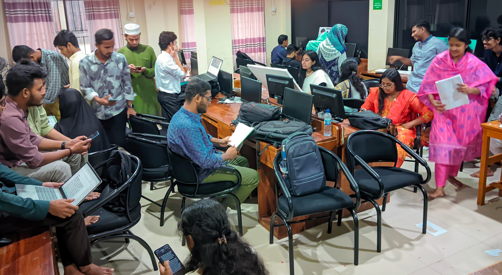
 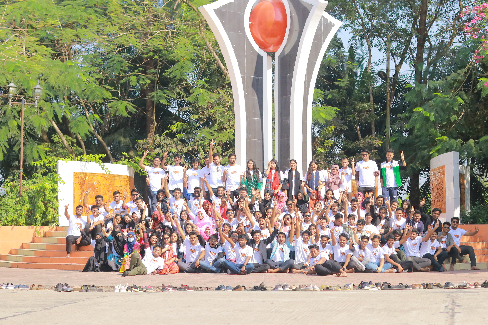
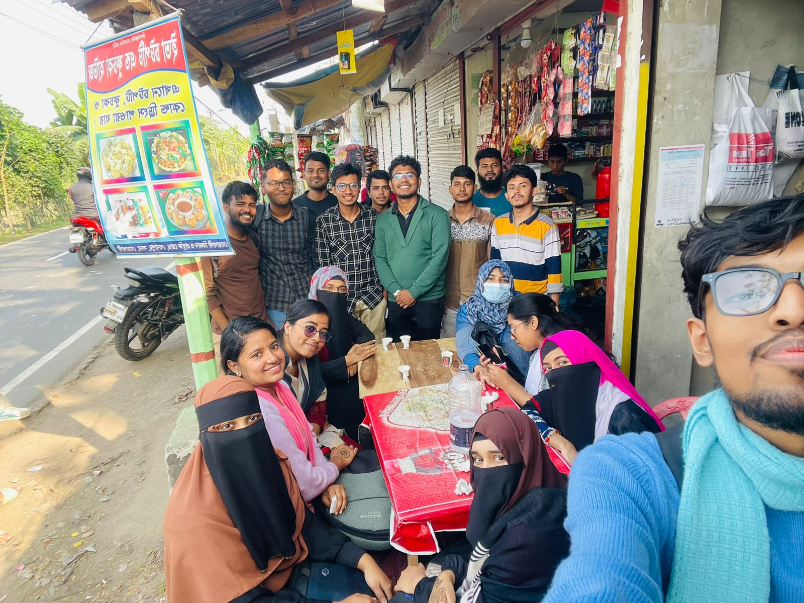
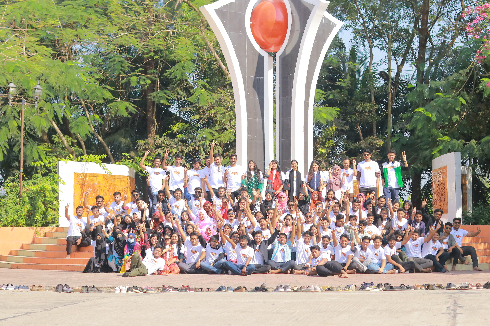
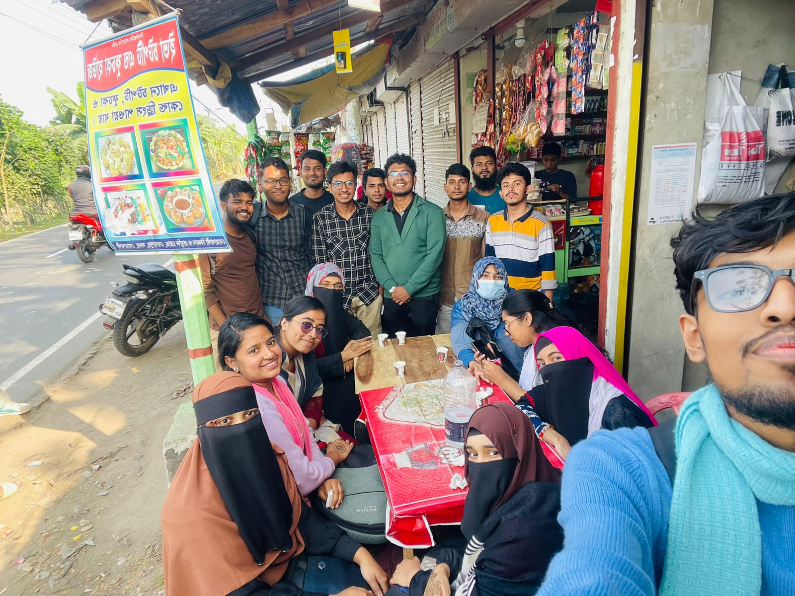
Study Tips
- Form study groups to share knowledge and solve problems together.
- Practice past exam papers to familiarize yourself with the question patterns.
- Use online resources like Khan Academy and Coursera to supplement your learning.
- Don’t hesitate to ask for help from professors and peers if you're struggling with a topic.
- Stay organized and manage your time effectively to balance studies and leisure.
Thank You to Our Teachers
We would like to express our heartfelt gratitude to all our teachers for their guidance and support throughout our academic journey. Your dedication inspires us every day!